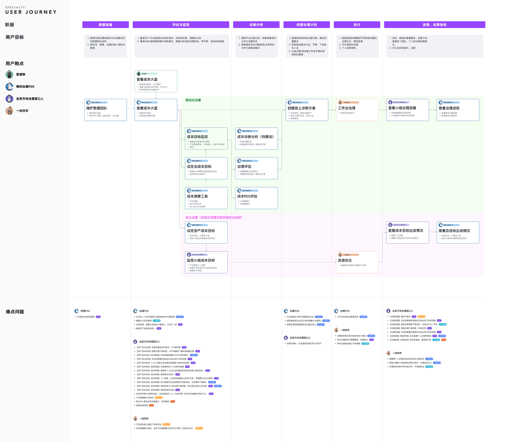

建立产品全局认知
将分散的模块放回完整的数据治理链路。
EXPERIENCE RESEARCH
在局部功能不断演进的复杂平台里，先建立全局认知，才能判断真正需要优化的环节。这个项目以完整流程和不同角色的真实任务为线索，连接业务理解与体验改进。

Pontus 尚未开展过全量摸底研究，团队难以系统评估平台体验现状。设计侧希望通过流程体验与用户访谈，理解不同角色的工作场景、痛点及其背后的业务关系。
将分散的模块放回完整的数据治理链路。
识别不同角色的关注点、使用路径和协作关系。
把问题整理为可讨论、可安排节奏的体验优化方向。
从实际操作出发理解产品能力与模块间关系，沉淀业务全景，补足团队对完整链路的共同认知。
通过访谈了解用户在不同阶段的目标与困难，在旅程中标注体验断点与协作阻力。
将痛点问题与产品一一讨论，明确后续优化节奏，推动调研发现进入实际迭代。
建立平台与治理链路的整体认识
与产研拉齐体验问题及后续优化节奏
本案例呈现研究过程与组织产出；框架与首页的设计方案在独立改版案例中展示。
查看 Pontus 框架与首页优化方案 ↗平台研究不应停留在问题清单。将反馈与角色、任务、流程阶段关联，才能让团队理解问题的上下文，并为跨模块的框架改进提供依据。